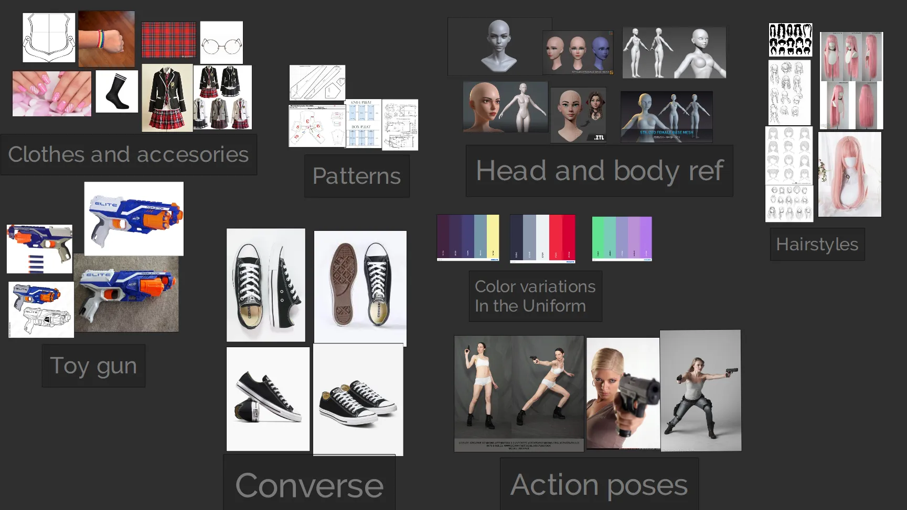

Personligt projekt for at prøve noget andet end makabre monstre. Langt størstedelen af tiden laver jeg dystre og 'underlige' væsener, specielt hvis det er inspieret af H.R Giger eller Zdzisław Beksiński, dette projekt prøvede jeg at udfordre mig selv i at lave noget mere sødt, for en gangs skyld. Det største fokus var at komme ud fra min komfort-zone, og lave tøj i Marvelous Designer
Blender
Zbrush
Substance Painter
Pureref
Marvelous Designer


